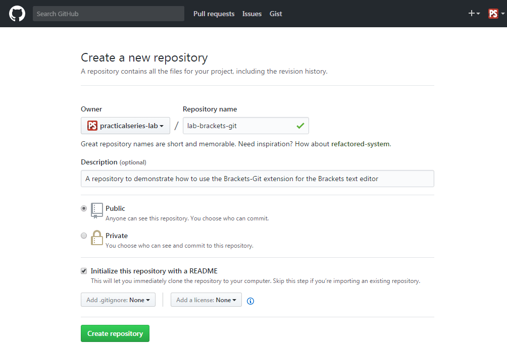
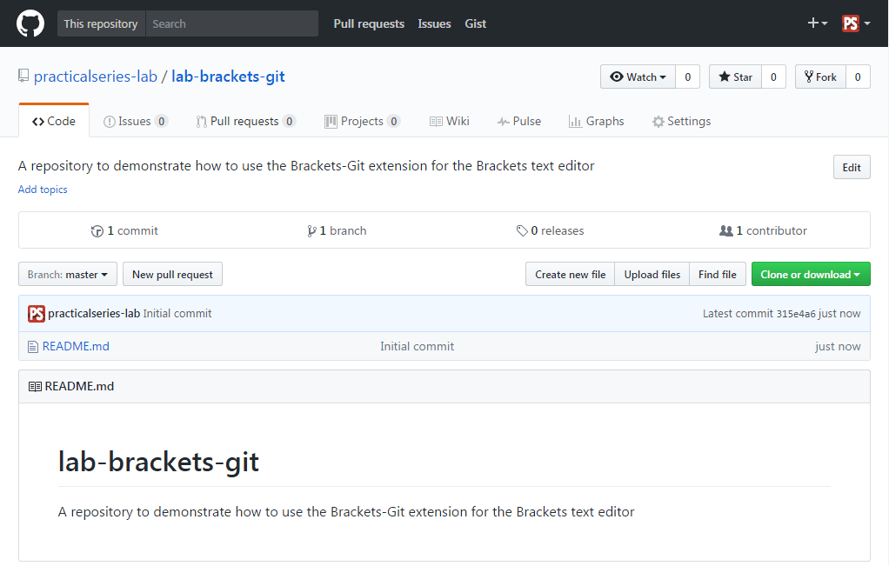

5.2.1
Create a new repository using GitHub
Go to the GitHub website and login to your account (the one you created in § 4.1). This will take you to your newsfeed page, mine looks like Figure 5.9.

Figure 5.9 My GitHub newsfeed page
We already have a repository (lab-1st-repo) that we made in the last section, but I’m going to make a new one. I’m going to call it:
lab-brackets-git
To do this, click either the button (highlighted) or the button (they both do the same).
Either option will move you to the Create new repository page. I’m going to select the following options (Table 5.1 and Figure 5.10):
| PROPERTY | VALUE | |
|---|---|---|
| Repository name | lab-brackets-git | |
| Description | A repository to demonstrate how to use the brackets-git extension for the Brackets text editor | |
| Public/private | Public | |
| Initialise with README | Ticked (selected) | |
| Add .gitignore | None | |
| Add a license | None | |
| Table 5.1 lab-brackets-git settings | ||

Figure 5.10 GitHub—Create a new repository
Click and, just like last time, it will automatically open the repository page:

Figure 5.11 GitHub—lab-brackets-git repository page

{kind=link}
{kind=link}